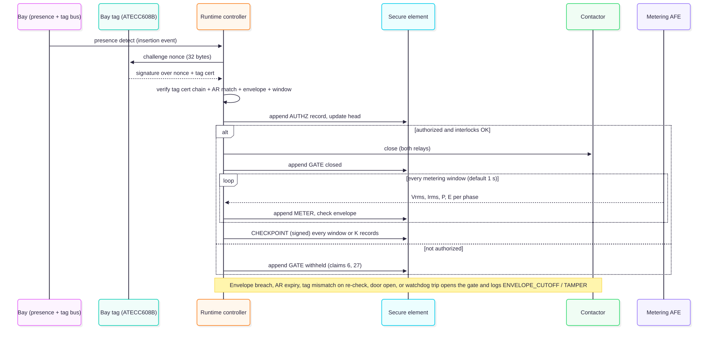

Version 0.9 (licensee data room), 22 November 2026. Prepared for Monotropic Studios LLC. CONFIDENTIAL.
Marking convention used in every file of this data room:
MEASURED means produced by a repeatable run in 07_Measurements/ (software reference model on a general-purpose server, not production hardware).
CITED means taken from a public page or document named next to it.
DESIGN TARGET means a number the design is built to hit. It has not been tested on hardware.
ASSUMPTION means a working value with no measurement or source yet. Each one needs the studio, counsel, or a quote to close.
1. What the system does
MonoQube moves the trust boundary for compute evidence outside the computer being measured. The hosting infrastructure, not the hosted machine, decides whether a machine may receive power, measures the power it draws, and writes a record that the hosted machine cannot edit. This follows the as-filed PCT/US26/39996 (claims 1 and 25, with dependents 5 to 13, 20, 21, 23, 26 to 29).
Three properties define the product:
Gate. Power reaches a bay only when the runtime controller has verified the device identifier in that bay against a signed authorization record delivered on a channel separate from the device (spec [0030] to [0031]).
Meter. Voltage and current are sampled on the feeder by pod-side sensors. The device reports nothing that the meter relies on (claims 13, 28).
Record. Every authorization, gate change, metering window, envelope cut-off, tamper and fault event is appended to a hash-chained operating record and sealed by signed checkpoints from a secure element (claims 7 to 12, 29; spec [0039], [0077]).
What it does not do, stated plainly so no licensee over-reads it: power evidence alone does not prove which algorithm ran or whether a result was correct (as-filed spec [0021]). MonoQube proves which identified hardware was energized, when, for how long, and how much energy it drew, under which authorization.
2. Product tiers
Tier
Name
What it is
Who builds it
T1
MonoQube Meter Module (MQ-MM-30)
DIN-rail runtime controller (MQ-MAC board) plus a power-gate contactor for one feeder up to about 30 kW at 208 V three-phase, plus one bay identity tag per hosted device
Licensee EMS or Monotropic reference build
T2
Metered rack
T1 module integrated ahead of a standard rack PDU, one module per feeder
PDU, rack, and server OEMs
T3
MonoQube Pod (MQ-POD)
Full 12 x 8 ft electrical-equipment vessel with 42U hardware-agnostic bay, dual-input power, UPS, cooling, EMI shielding, and the T1 control plane (from Monotropic Technical Volume D26BZ-DV010-0121)
Licensed integrator / fabricator
The beachhead in 06_Wedge_GTM lands with T1 and T2 because they retrofit into existing racks in days. T3 is the expansion product for sites that need the full vessel.
The hosted device has no electrical or logical path to the controller, the metering AFE, the secure element, or the ledger store. The bay tag bus is a separate two-wire bus on the bay connector that terminates at the controller.
The telemetry network is physically separate from the compute network (two NICs, two switches; Technical Volume "Dual-Path Isolation").
The contactor coil is driven through two relays in series: one from firmware, one from the hardware interlock chain. Firmware alone cannot hold power on if a door opens or the watchdog trips.
4. System context (fleet view)

Source: diagrams/fleet_context.mmd.
5. Control sequence (insertion to cut-off)

Source: diagrams/control_sequence.mmd.
6. Reference pod (T3) subsystem summary
From Monotropic Technical Volume D26BZ-DV010-0121 (June 2026). All values are DESIGN TARGETS until a prototype is tested.
Subsystem
Design target
Envelope
12 ft L x 8 ft W, flatbed transportable, forklift / crane interfaces, seismic anchoring to ASCE 7-22
Bay
Single 42U hardware-agnostic bay per IEC 60297; GPU, CPU, FPGA, co-processor inserts as tagged hot-swap modules
Power
3 to 30 kW dual-input, automatic transfer switch (UL 1008), integrated UPS about 15 min at full load, service under 400 A
Metering
Circuit-level metering, target accuracy better than +/-1% (Tim's volume); this data room sets a tighter target of +/-0.5% energy, see spec sheet
Cooling
Passive plus liquid hybrid, IP54, redundant pumps, closed loop above 95 F
Shielding
EMI shielding target above 60 dB (Tim's volume cites TEMPEST posture; no test performed)
Network
Dual-path fiber, separate telemetry network, satellite out-of-band backup
Crypto
FIPS 140-3 validated module for keys; post-quantum migration path (FIPS 203 / 204)
Permitting
One AHJ review (Town of Blacksburg, VA) classified the enclosure as electrical equipment requiring UL listing and an electrical permit; treatment is site-specific (Tim's volume)
7. Why the architecture is hard to copy without a license
The claims cover the combination of device-identifier authorization, power gating, and pod-side measurement in a hosting structure, which is the minimum set needed to make the record independent of the payload. A competitor that drops any one leg loses the independence property.
Software-only metering (in-guest agents, hypervisor counters, BMC telemetry) sits inside the trust boundary being evaluated (spec [0012], [0018], [0019]). That is the gap the product fills.
Claim scope is pending and unpublished. See 04_Licensing/03_IP_Status_and_Claim_Coverage.md for the honest status.
MQ-ATTEST v0.9: Metering and Attestation Protocol
Status: draft specification for licensees, 22 November 2026. The reference model in 07_Measurements/src/monoqube_ref.py implements suite 0x01 below. Production firmware implements suite 0x02.
1. Roles and keys
Role
Holds
Key / credential
Where it lives
Runtime controller (RC)
Pod Attestation Key (PAK)
ECDSA P-384 (suite 0x02) or Ed25519 (suite 0x01)
Generated inside the secure element, never exported
Bay tag (BT)
Device Tag Key (DTK)
ECDSA P-256
ATECC608B on the device carrier, generated on chip
Manufacturing CA (MCA)
Signs pod and tag certificates
ECDSA P-384
Offline root plus HSM-backed issuing CA at the licensee factory
Authorization Authority (AA)
Issues Authorization Records (AR)
ECDSA P-384
Operator or lender side service; can be the licensee or the customer
Checkpoint Witness (W)
Countersigns ledger heads
ECDSA P-384
Independent service (Monotropic, licensee, auditor, or lender)
Verifier (V)
Nothing secret
Public certs only
Anyone
2. Cipher suites
ID
Signature
Hash
Use
0x01
Ed25519
SHA-256
Reference model and demos only
0x02
ECDSA P-384 (FIPS 186-4/5)
SHA-384
Production. Algorithms are on the SE052F CMVP certificate #5139 approved list
0x03
ML-DSA-65 (FIPS 204) dual-signed with 0x02
SHA-384
Post-quantum migration once a validated module is available. ASSUMPTION: timing depends on vendor module validation
Ed25519 is not in the SE052F approved-algorithm list (CMVP #5139, checked 22 Nov 2026), so FIPS deployments must use 0x02.
3. Record format
Production encoding is deterministic CBOR (RFC 8949 section 4.2). The reference model uses canonical JSON (sorted keys, no whitespace). Field names are the same.
Common header on every record:
Field
Type
Meaning
v
uint
Protocol version (9)
suite
uint
Cipher suite ID
pod
tstr
Pod serial, bound to the PAK certificate
seq
uint
Strictly increasing from 0, persisted in F-RAM and mirrored to the SE monotonic counter at each checkpoint
prev
bstr
Hash of the previous record (genesis = all zeros)
t_ns
uint
Wall-clock time from the pod RTC, nanoseconds since Unix epoch
mono
uint
Monotonic tick counter since boot (detects clock steps)
type
tstr
One of the types in section 4
hash
bstr
H(canonical(record without hash and sig))
sig
bstr
Only on CHECKPOINT and KEY_ROTATE: PAK signature over hash
Records never contain payload data: no file contents, prompts, network payloads, or process names. MEASURED: a 62-second run produced 126 records and 43,423 bytes with zero hits for canary bytes planted in the payload's memory (07_Measurements/results/overhead_extra.json).
4. Record types
Type
Body fields
Claim / spec anchor
BOOT
fw_version, fw_hash, boot_reason, cal_id
Secure boot evidence
INSERT / REMOVE
bay, presence
Claim 12 (insertion, removal event)
AUTHZ
bay, device (tag cert hash), ar_id, state (authorized / unauthorized), reason
Claims 1, 7, 25, 29
GATE
bay, gate (closed / open), cause
Claims 6, 14 to 17, 27
METER
bay, window_ms, energy_mj, peak_mw, vrms_mv[3], irms_ma[4], pf_milli, n_samples
Claims 7, 12, 19, 22
ENVELOPE_CUTOFF
bay, rule (power, current, temp, duration, window), observed, limit
Neither the tag alone nor the AR alone authorizes power (spec [0031]). Both must match.
The RC permits the lesser of the requested and the authorized duration (spec [0031]).
max_w default for an NVIDIA DGX B200 class server would be its published maximum of about 14.3 kW (CITED: NVIDIA DGX B200 page). The operator sets the real value.
fail_policy is mandatory. Life-safety codes and the site's electrical design decide whether a controller fault opens or holds the gate. The record always logs which happened.
6. Insertion and authorization
Presence detect on the bay connector fires INSERT.
RC sends a 32-byte random nonce from the SE TRNG to the tag over the bay bus.
Tag returns ECDSA P-256 signature over (nonce || pod || bay) and its certificate.
RC verifies the tag cert chain to the MCA, checks the signature, finds a valid AR whose device_tag_cert_sha384 matches, checks window and envelope, and writes AUTHZ.
If authorized and the hardware interlock chain is satisfied, RC closes the firmware relay. The contactor closes only if the interlock relay is also closed. RC writes GATE closed.
If not authorized, RC writes AUTHZ unauthorized and GATE withheld.
Re-evaluation: the tag challenge repeats every 60 s (configurable) and on any TAMPER interrupt. A failed re-check opens the gate (spec [0003] repeated re-evaluation).
7. Metering
ADE9000 samples at 8 or 32 kSPS internally and provides RMS, active power, and energy registers. RC reads every metering window (default 1,000 ms).
RC computes energy for the window, peak power, and per-phase RMS, and appends METER.
Neutral current channel is compared against the vector sum of phase currents. A mismatch above threshold raises TAMPER neutral_imbalance (detects a CT bypass on one phase).
MEASURED (reference model, modeled sensor): with 0.5% Gaussian noise of reading, 16-bit ADC, 1 kHz sampling, 200 sessions of 60 s, mean absolute energy error 0.0022%, p95 0.0057%. With an added 0.2% standard-deviation gain error per sensor, mean 0.17%, p95 0.52%, max 0.62%. Calibration, not noise, dominates real accuracy. Source: 07_Measurements/results/accuracy*.json.
8. Checkpoints and the witness
RC writes a CHECKPOINT at least every 1 s and at most every 1,000 records. The SE signs hash. The SE monotonic counter is incremented and its value included, so rolling back F-RAM is detectable.
RC sends the checkpoint (seq, head, sig) to one or more Witnesses. The witness returns a signed receipt over (pod, seq, head, witness_time). RC stores the receipt in the next CHECKPOINT body.
Why a witness is required: MEASURED tamper suite (1,000 trials each) detected 100% of edits, deletions, insertions, reorders, replays, backdating, and wrong-key forgeries, and 0% of truncation back to an earlier valid checkpoint when no external copy of the last checkpoint existed. With the verifier holding the last witnessed checkpoint, truncation detection was 100%. Source: 07_Measurements/results/tamper.json.
9. Verification algorithm (what any third party runs)
Input: record bundle, PAK certificate chain, MCA root, optional witness receipts.
Verify PAK cert chains to the MCA root and is not revoked (CRL or OCSP from the licensee).
For i = 0..n-1: check seq == i, prev == hash(i-1), recompute hash, check t_ns non-decreasing unless a TIME_SYNC record explains the step.
Verify every sig on CHECKPOINT / KEY_ROTATE with the PAK.
Last record must be a signed CHECKPOINT.
If witness receipts are supplied, check the last witnessed (seq, head) is present and equal in the bundle (rollback / truncation test).
Optional: recompute SESSION_SUMMARY totals from METER records and compare.
MEASURED verify throughput in the reference model: 232,800 records per second on one core; Ed25519 verify p50 85.6 microseconds (07_Measurements/results/throughput.json, crypto.json).
10. Export interfaces
Pull: HTTPS with mutual TLS 1.3, GET /v1/records?from_seq=&to_seq= returns a bundle.
Push: webhook or MQTT of CHECKPOINT and SESSION_SUMMARY.
File: signed bundle (.mqb, CBOR sequence plus certs) for air-gapped sites.
Details and SDK examples: 03_Spec_Integration_Test_Cert/02_Integration_Guide.md.
11. Open items
Choose the time authentication method per site (NTS RFC 8915 vs Roughtime). ASSUMPTION: NTS.
Confirm SE052F supports the needed monotonic counter semantics or move the counter to an MCU secure OTP / RPMB scheme. Needs engineering check.
Formal CDDL schema for every record type (draft in reference repo plan).
Firmware and Software Components
1. Controller firmware (STM32H573, TrustZone)
Component
Partition
Function
Base (licensee may substitute)
Immutable root of trust
ROM / secure
Verifies the next stage, enforces lifecycle state
ST STiROT or OEMiRoT
Secure bootloader
Secure
Verifies signed images, anti-rollback counter, A/B slots
MCUboot (Apache-2.0)
Attestation service
Secure (TF-M partition)
Owns the SE session, builds and signs CHECKPOINT and SESSION_SUMMARY, holds ledger head
Trusted Firmware-M (BSD-3)
Ledger store
Secure
Append-only log in NOR flash, head and seq in F-RAM, wear leveling, never rewrites a committed page
Monotropic
Authorization engine
Secure
Tag challenge, AR verify, envelope rules, duration limits, re-evaluation timer
Monotropic
Gate driver
Secure
Drives firmware relay; reads contactor auxiliary contact to confirm actual state; logs mismatch as FAULT
Monotropic
Metering task
Non-secure, read-only path into secure
Reads ADE9000 over isolated SPI, computes windows, calibration constants signed at factory
Monotropic + ADI reference
Tamper monitor
Secure
Door sensors, accelerometer wake, neutral imbalance, enclosure open
Monotropic
Time service
Non-secure
NTS client, RTC discipline, TIME_SYNC records
open-source NTS client
Network stack
Non-secure
lwIP, TLS 1.3 (mbedTLS) with keys in SE, REST server, MQTT client
lwIP, Mbed TLS
Update agent
Non-secure + bootloader
Pulls signed images, staged install, rollback protection
MCUboot
Design rules:
The hosted device cannot reach any of this. The only external interfaces are the telemetry Ethernet port, the bay tag bus, and a local service port that is disabled after provisioning.
The hardware interlock chain (doors, watchdog, fault) can open the gate with the MCU halted. Firmware cannot override it.
Every firmware image hash is logged in BOOT. A verifier can reject records produced by an unapproved image.
2. Fleet and cloud software
Service
Function
Notes
Authorization Authority
Issues and revokes ARs; policy templates (lender, operator, auditor)
Can be self-hosted by the customer; HSM keys
Checkpoint Witness
Countersigns ledger heads; append-only transparency log of heads
Multiple witnesses supported; lender can run its own
Record Vault
Stores bundles, indexes by pod / bay / device / session
Object storage plus index; no payload data
Verifier SDK
Verifies bundles offline
Python (reference exists), Go, TypeScript planned
Reports
Usage statements, collateral attestations, evidence packs (SOC 2, EU AI Act Article 12 log support)
ASSUMPTION: connector list to be confirmed by pilot partners
3. Manufacturing and provisioning tools
Key-injection station: asks the SE to generate the PAK internally, reads the CSR, signs with the issuing CA in an HSM, writes the cert back. Private keys never leave the SE.
Calibration station: compares the module against a reference meter at the test points in 03_Spec_Integration_Test_Cert/03_Test_and_Validation_Plan.md, writes signed calibration constants, records cal_id.
Tag provisioning: ATECC608B on each carrier generates its DTK; tag cert issued by the MCA with the device serial and class.
4. Licensing of software
Open-source components listed above are permissive licenses (Apache-2.0, BSD-3). The Monotropic components (ledger, authorization engine, attestation service, gate driver, tamper monitor, verifier, witness) are licensed under the patent and software license in 04_Licensing/02_Draft_Term_Sheet.md. ASSUMPTION: Monotropic retains copyright in the reference firmware once written; licensee gets a source license.
Security and Threat Model
1. Assets
Asset
Why it matters
Operating record integrity
The product is the record. If it can be edited, nothing else matters.
Pod Attestation Key (PAK)
Signs checkpoints. Extraction allows forgery.
Authorization Records and AA key
Control who gets power.
Gate state
Physical control of a financed or regulated asset.
Meter accuracy
Billing, collateral and evidence value depend on it.
Calibration constants
Altering them skews energy quietly.
2. Adversaries
Adversary
Goal
Capability assumed
Tenant / payload operator
Under-report use, run unauthorized hardware, hide activity
Full root on the hosted machine; physical access to the rack front
Asset owner / borrower
Hide removal or idling of collateral, inflate utilization for a draw
Physical access to the site, can open doors, can cut power, can image storage
Network attacker
Forge or replay records, block exports
On the telemetry network
Insider at licensee or Monotropic
Issue rogue certs or ARs
Access to CA or AA systems
Supply-chain attacker
Implant firmware or swap components
Access before delivery
3. STRIDE table
Threat
Example
Control
Residual
Spoofing a device
Clone a bay tag to make an unapproved server look approved
DTK generated and held in ATECC608B, challenge-response every 60 s with fresh nonce
Physical extraction attacks on the tag chip; tag bound to carrier by tamper-evident mount
Spoofing a pod
Fake meter emits records
PAK in SE052F (FIPS 140-3 L3, physical L4, CMVP #5139); pod cert chain
Compromise of MCA
Tampering with records
Edit energy values
Hash chain + signed checkpoints. MEASURED 100% detection across 10 attack classes x 1,000 trials
None found in model
Tampering by truncation
Roll ledger back to an earlier valid checkpoint
Witness receipts + SE monotonic counter. MEASURED 0% detection without witness, 100% with
Requires at least one honest witness
Tampering with measurement
Bypass CT on one phase
Neutral-current vs phase-sum check, upstream feeder metering, door sensors
A skilled electrician with the panel open; logged as TAMPER door open first
Tampering with calibration
Change gain constants
Constants signed at factory, cal_id in BOOT, verifier pins approved cal_ids
Records contain no payload content. MEASURED 0 payload bytes
Power side channels (coarse, 1 s windows); document in customer DPA
Denial of service
Kill the telemetry link
Local ledger continues; witness gap is visible; OOB link option
Long outages delay evidence, do not erase it
Elevation of privilege
Payload gains control of gate
No path from payload to controller; separate network; hardware interlock
Misconfigured site wiring; covered in install checklist
Time manipulation
Backdate sessions
Authenticated time (NTS), monotonic counter, TIME_SYNC logging. MEASURED backdating detection 100% in model
RTC drift if offline for months (1 ppm RTC is about 2.6 s per month)
Rogue authorization
Insider issues AR for unapproved hardware
AA keys in HSM, dual control, every AR id logged in AUTHZ and visible to verifier
Collusion
4. Safety versus security
A power gate on IT equipment is a safety-relevant function. Rules:
The gate never defeats life-safety systems (EPO, fire alarm shunt trip). Those sit upstream and override.
fail_policy in the AR is explicit and logged.
Remote cut-off for credit or contract reasons is a commercial and legal decision outside the protocol. See 05_FAQ/Licensee_FAQ.md (remote disablement) and get counsel review before any lender uses it.
5. Limits stated plainly
Power evidence does not prove which software ran or that outputs are correct (as-filed spec [0021]). Pairing with a trusted workload signal (GPU confidential-computing attestation, TPM quotes) is an integration option, not a claim.
The reference model numbers are software results with modeled sensors. Hardware results come from the validation plan.
No third-party penetration test has been done yet.
Reference Implementation Layout
1. What exists today (MEASURED, reproducible)
07_Measurements/ is a copy of the reference prototype built 22 November 2026 (source: /workspace/monoqube-mvp-metrics/).
Path
What it is
src/monoqube_ref.py
Software model of the controller: identifier reader (stands in for the bay tag bus), authorization records, power gate state, modeled branch-circuit sensor, hash-chained ledger with Ed25519 signed checkpoints, external verifier
src/bench.py
Benchmarks: crypto timing, throughput, tamper suite, accuracy vs ground truth, payload overhead and payload exposure
run_all.sh
Runs every benchmark (about six minutes) and writes results/*.json
results/
Raw results, environment record (env.json: Python 3.13.5, cryptography 43.0.0, 8-core Xeon, seed 20261122)
Headline results (MEASURED, software model, not hardware):
Metric
Result
Tamper attacks detected (10 types x 1,000)
10,000 / 10,000
Truncation detected with witnessed checkpoint / without
1,000 / 1,000 and 0 / 1,000
False positives on clean ledgers
0 / 200
Payload bytes in record (canary scan)
0
Payload slowdown, meter on other core / same core
1.21% / 4.59% median
Meter CPU at 1 kHz sampling, 1 signed checkpoint/s
about 6% of one core
Ed25519 sign / verify p50
31.2 / 85.6 microseconds
Append rate (hash chain, checkpoint per 1,000)
220,477 records/s
Verify rate
232,800 records/s
Energy error, modeled 0.5% sensor
0.0022% mean, 0.0095% max
Energy error with 0.2% gain error
0.17% mean, 0.62% max
2. Production repository plan (to be built; layout fixed now so licensees can plan)
monoqube/
firmware/
boot/ MCUboot config, signing keys (HSM refs only)
tfm-partition/ attestation service, ledger, authz engine, gate driver, tamper
ns-app/ metering task, NTS client, REST/MQTT, update agent
drivers/ ade9000, se052f, atecc608b, fm25v10, w25q128, tmp117, lis2dw12
cal/ calibration constant format + signer
tests/ unit tests, HIL scripts
hardware/
mq-mac/ schematic, layout, fab notes, BOM (02_BOM is the costed version)
bay-tag/ tag carrier board
panel/ UL 508A panel drawings for module + contactor
services/
authority/ AR issuance, revocation, policy templates
witness/ checkpoint countersigning, transparency log
vault/ bundle storage and index
reports/ usage statements, collateral attestation, evidence packs
sdk/
python/ verifier (port of monoqube_ref.verify), bundle tools
go/ verifier
ts/ verifier for browser portals
spec/
mq-attest.cddl record schemas
test-vectors/ signed sample bundles (good and tampered)
tools/
provisioning/ key injection station, tag provisioning
calibration/ calibration station scripts
3. Sample operating record (from the reference model)
This is a sample audit export. The production format adds the header fields in the protocol spec (version, suite, monotonic tick, witness receipt).
4. How to reproduce
cd 07_Measurements && ./run_all.sh
Requires Python 3.11+ and the cryptography package.
Manufacturing, Assembly, and Deployment Ramp (unit 1 to 10,000)
All volumes and dates are ASSUMPTIONS for planning unless marked.
1. Build flow for the Meter Module (T1)
PCBA (MQ-MAC): 6-layer board, IPC-A-610 Class 2 minimum (Class 3 for defense SKUs), isolation slot under the ISOW7841, conformal coat on the mains side. Built by an EMS partner.
Programming and key injection: in a controlled room. The SE052F generates the Pod Attestation Key internally. The station reads the CSR, the issuing CA in an HSM signs it, the cert is written back. No private key exists outside the chip.
Calibration: each module is run against a reference power standard at the test points in the validation plan. Gain and phase constants are signed and stored with a cal_id.
Functional test: gate cycle, tag challenge, tamper inputs, watchdog trip, record export and verify. A failed unit's key is revoked before scrap.
Panel assembly: controller, contactor, CTs, terminals, and PSU are mounted and wired in a UL 508A listed panel shop so the assembly carries the panel label.
Pack and ship: tamper-evident seal over the service port, serial and cert fingerprint on the label.
2. Ramp plan
Phase
Units (cumulative)
Timing from funding (ASSUMPTION)
Who builds
Gate to next phase
P0 Engineering build
1 to 5
Months 0 to 4
Prototype house (quick-turn PCBA) + in-house assembly
Bench accuracy within target, protocol conformance, pre-compliance EMC scan
P1 Pilot fleet
10 to 25
Months 4 to 7
Same, with NRTL field evaluation per site
3 pilots live, success metrics met, design freeze
P2 Listed product
100
Months 7 to 12
EMS partner, low-volume line; UL 508A panel shop
NRTL listing, FCC Part 15 Class A, pen test closed
P3 Scale-up
1,000
Months 12 to 24
EMS partner with box build; licensee OEM begins own builds
First royalty-bearing licensee shipping
P4 Volume
10,000
Months 24 to 48
Licensee OEM lines (PDU / rack makers) plus EMS second source
Royalty reporting automated from the licensee ledger
At P3 and beyond the licensing model means most units are built by licensees on their own lines. Monotropic keeps the reference design, test spec, key-injection CA policy, and conformance program.
3. Contract manufacturer and assembly options
These are named as candidates with public capabilities. None has been contacted. Quotes are needed.
Any UL 508A listed panel shop near the EMS (UL Product iQ lists them)
Panel label is what the AHJ inspector looks for
Volume (P4)
Licensee in-house lines (PDU, rack, server OEMs) or tier-one EMS (Jabil, Flex, Celestica)
Royalty model means licensee builds
4. Supply-chain risks (from the live supplier pages, 22 Nov 2026)
Part
Observation
Mitigation
STM32H573ZIT6 (MCU)
0 in stock at Digi-Key, 360 due 19 May 2027, 52 week factory lead
Buy ahead at P0 funding; qualify NXP i.MX RT1170 or Microchip PIC32CZ as second source; keep firmware HAL portable
ISOW7841DWER
0 in stock, due Feb 2027, 26 week lead
ISOW7841DWE (different packing) or ADuM5401 + ADuM1401 pair
RV-3028-C7 RTC
0 in stock, due May 2027
MCU internal RTC with VBAT as fallback; Abracon AB1805
TMP117, LIS2DW12, TPS3431
0 in stock, due Dec 2026 to Mar 2027
Substitutes listed by Digi-Key (Bosch BMA456 in stock for the accelerometer); keep footprints compatible
ADE9000
In stock 559, 44 week lead
Buy P0 to P2 needs up front; ADE9078 as pin-compatible lower-cost option
CR8350-1000 CT
Non-stock, 20 week lead, qty-1 price only
Quote CR Magnetics direct; second source split-core CTs (Magnelab SCT-0750-100) for retrofit SKUs
LC1D95BD contactor
Newark list $715.39, 1 in stock
Biggest cost line. Quote Schneider distribution direct, ABB AF96, Siemens 3RT; allow OEM licensees to use their own switching device
SE052F
9,738 in stock
Hold 12 months of buffer; SE050F (FIPS 140-2) as fallback for non-FIPS customers
Tariffs
Digi-Key pages note tariffs may apply on US shipments
Price quotes landed, not ex-works
5. Field install and support model
Item
Model
Install
Licensed electrician installs the panel on the feeder under a normal electrical permit; MonoQube install checklist (wiring, CT orientation, tag pairing, network separation) signed off in the app; site acceptance test writes a signed SAT record into the ledger
Time on site
DESIGN TARGET half a day per rack feeder for retrofit (ASSUMPTION, to be measured in pilots)
Commissioning
AR issued by the customer's authority; first checkpoint witnessed; verifier run against the SAT bundle
Swap-in module; keys are per module, so a swap creates a KEY_ROTATE chain link visible to auditors
Monitoring
Witness gaps and FAULT records alert the support desk automatically
Warranty
PROPOSED 2 years hardware; reserve 2% of price (cited OEM average 1.05%)
6. Pod (T3) build notes
The pod is built by a licensed fabricator or integrator against Monotropic drawings: frame and shell, shielding, insulation, cooling, electrical (panelboard, ATS, UPS), fire detection, and the T1 control plane. Pod listing path is UL 2755 (modular data center) so the AHJ can accept it under NEC Article 646. Pod pricing in this data room is incomplete because shell, cooling, ATS, electrical, fire, and OOB lines are RFQ (see 02_BOM).